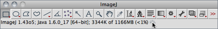

Part IV. ImageJ User Interface
Unlike most image processing programs ImageJ does not have a main work area[?]. ImageJ’s main window is actually quite parsimonious containing only a menu bar (at the top of the screen on the Mac) containing all the Menu Commands↓, a Toolbar↓, a Status bar↓ and a Progress bar↓. Images, histograms, profiles, widgets, etc.are displayed in additional windows. Measurement results are displayed in the Results Table↓. Most windows can be dragged around the screen and resized.
The ImageJ window (version 1.46j).
| 1 | 2 | 3 | 4 | 5 | 6 | 7 | 8 | 9 | 10 | 11 | 12 | A | B | C | D | E | F | G | H | 13 |
 |
||||||||||||||||||||
| Status bar↓ | Progress bar↓ | |||||||||||||||||||
| 1 | Rectangular Selection Tool↓ and Rounded Rectangular Selection Tool↓ | 8 | Wand Tool↓ |
| 9 | Text Tool↓ | ||
| 2 | Oval Selection Tool↓, Elliptical Selection Tool↓ and Brush Selection Tool↓ | 10 | Magnifying Glass↓ |
| 11 | Scrolling Tool↓ | ||
| 3 | Polygon Selection Tool↓ | 12 | Color Picker Tool↓ |
| 4 | Freehand Selection Tool↓ | 13 | More Tools Menu↓ |
| 5 | Straight Line Selection Tool↓, Segmented Line Selection Tool↓, Freehand Selection Tool↓ and Arrow Tool↓ | A—H | Customized tools installed from StartupMacros.txt, macros/toolsets/, macros/tools/ or plugins/Tools/ |
| 6 | Angle Tool↓ | ||
| 7 | Point Tool↓ and Multi-point Tool↓ |
Toolbar
The ImageJ toolbar contains tools for making selections, drawings, zooming and scrolling, etc. In addition, the right-side of the toolbar contains seven slots that can host any of the 60+ tools and 15+ toolsets available on the ImageJ website (see Custom Tools↓).
All ImageJ tools share common features:
- The
 on the bottom right corner of some icons in the toolbar depicts a contextual menu that can be accessed by right-clicking on the tool icon (e.g., Stacks Menu↓).
on the bottom right corner of some icons in the toolbar depicts a contextual menu that can be accessed by right-clicking on the tool icon (e.g., Stacks Menu↓). - If an ‘Options’ dialog is available for a particular tool, it can be accessed by double clicking on the tool icon (e.g., Wand Tool↓).
Status bar
When the cursor is over an image, pixel intensities and coordinates are displayed in the status bar. After running a filter, elapsed time and processing rate (in pixels / second) are also displayed. When clicking on the status bar the ImageJ version, the Java version, memory in use, memory available and percent memory used will be displayed. As Selections↑ are created or resized, selection properties (e.g., location, width, etc.) are displayed on the status bar.
In addition, clicking on ImageJ’s status bar, forces the Java garbage collector to run, which may help to reclaim unused memory (see ). You can assess this by running : each click on the Status bar should lead to a spike in the ImageJ’s memory utilization.

,
6 Toggling Calibrated Units
If a spatial scale has been defined in or , selection properties are displayed in the Status bar↑ in calibrated units. Resizing or moving while holding down Alt forces this information to be displayed in pixels.
Progress bar
The progress bar, located to the right of the status bar, shows the progress of time-consuming operations. It will not appear if the operation requires less then approximately one second.